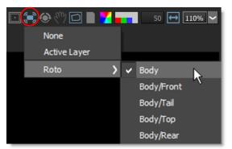
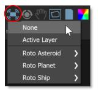
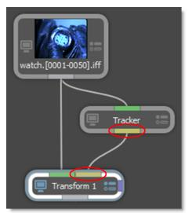
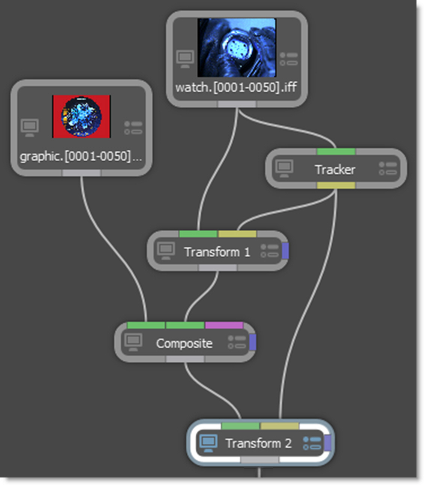
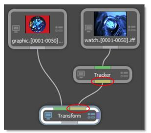

Stabilize and Match Move Workflow
A common visual effects workflow is to first stabilize the camera motion, composite elements on the locked down plate and then match move to restore the original motion.The downside of this approach is that the image is filtered twice resulting in some slight image degradation, but nothing a bit of sharpening won’t solve.
A novel twist on the stabilize/match move workflow is Silhouette’s Viewer stabilization which non-destructively stabilizes the viewer. The beauty of this approach is that image pixels are not modified during stabilization--only the Viewer is stabilized.
Viewer Stabilization
1 Click the Stabilize icon above the Viewer and choose either the Active Layer or a layer from the list. Available layers are organized by node.
The Viewer is now stabilized based on the selected layer’s tracking data.
2 Roto, paint and composite while stabilized.
3 To disable Viewer stabilization, click on the Stabilize icon and select None to turn it off.
The Viewer is returned to its normal state.
Image Stabilization
Image stabilization and match moving are achieved using the Transform node. When the Data output of a Roto or Tracker node is plugged into another node’s Data input (Paint, Transform and others), the tracking data in the transformed layers is available to match move or stabilize.
1 In the Trees window, add a Transform node from the Nodes > Transform group and connect it to the source node.
2 Drag a Tracker node from the Nodes > Transform group onto the source node.
A new branch is created.
3 Connect the Tracker’s Data output into the Transform node’s Data input located at the top right of the node.
The Data ports are colored yellow.
4 Single-click in the center of the Tracker node to view and edit it.
5 Track an object and apply the tracker to a layer.
6 Single-click in the center of the Transform node to view and edit it.
7 Select a point tracker or tracked layer from the Transform > Transform pop-up menu.
8 Choose Stabilize in the Transform > Mode pop-up menu.
The tracking data from the selected layer is applied to the image and it is stabilized.
9 If you’d like, you can now add various elements to the stabilized image.
10 To reapply the clip’s original motion, copy the original Transform node used to stabilize the image, paste it after the added elements, and hook the Tracker node’s Data output into the new Transform node’s Data input.
11 Change the new Transform node’s Transform > Mode from Stabilize to Match Move.
The image now has the original motion applied to it. Images can also be match moved without being previously stabilized.
Match Move
1 In the Trees window, drag a Tracker node from the Nodes > Transform group onto the source node you want to track.
2 Add a Transform node from the Nodes > Transform group and connect it to the source node you want to match move.
3 Connect the Trackers Data output into the Transform node’s Data input located at the top right of the node.
4 Single-click in the center of the Tracker node to view and edit it.
5 Track an object and apply the tracker to a layer.
6 Single-click in the center of the Transform node to view and edit it.
7 Select a point tracker or tracked layer from the Transform > Transform pop-up menu.
8 Choose Match Move in the Transform > Mode pop-up menu.
The tracking data from the selected layer is applied to the image and it is match moved.
9 If necessary, you can use the Transform node’s parameters in conjunction with the tracking transform.